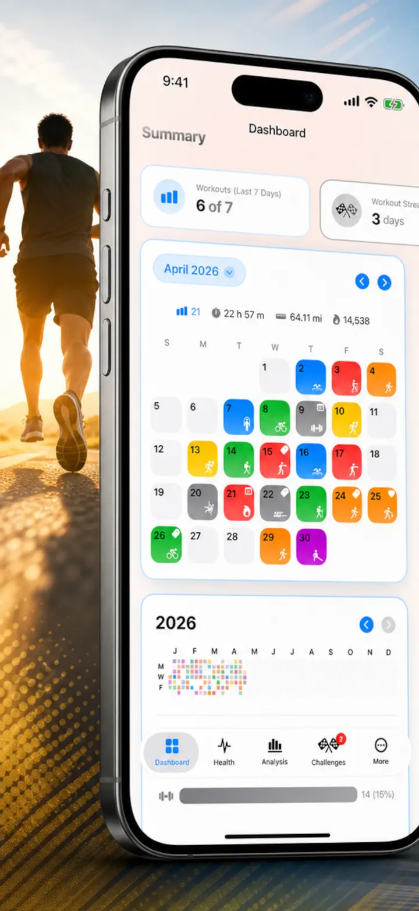
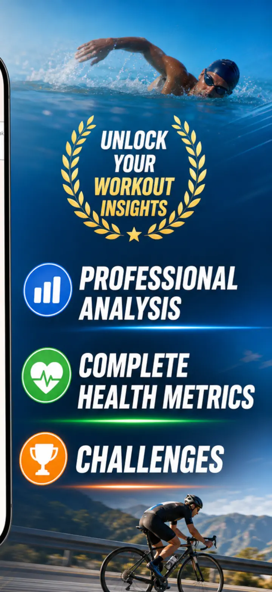
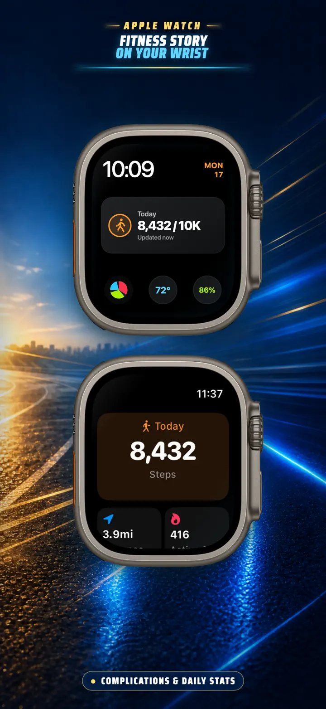
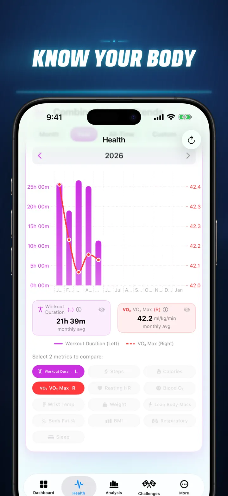
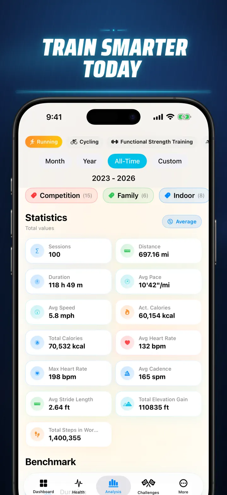
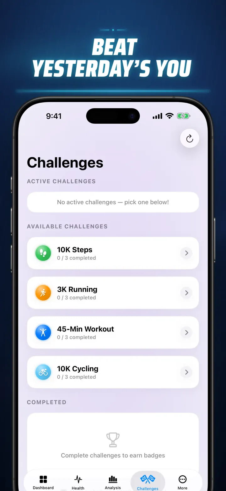
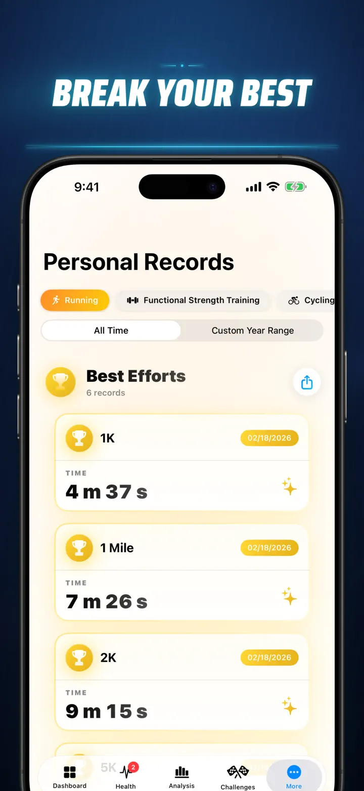
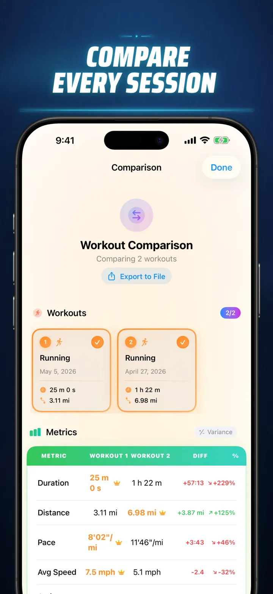
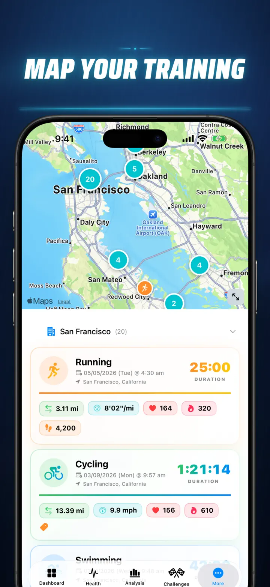
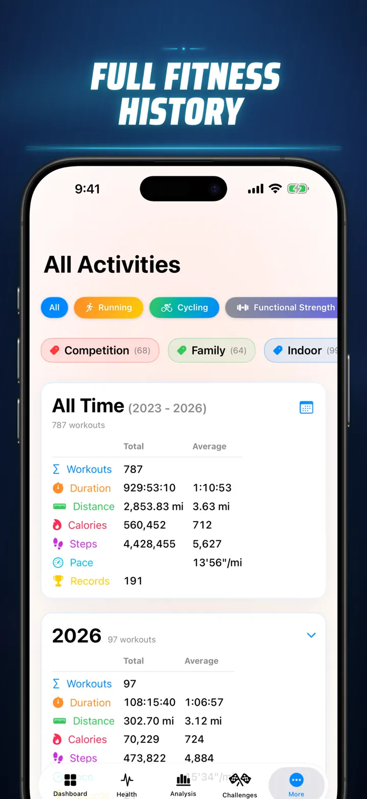

Fitness Story
Workout Insights / Challenges
Now on Apple Watch: today's steps on any watch face, plus a Today screen for distance, calories and floors — straight from Apple Health.
Download on the App Store
About the app
Stop guessing. Start knowing. Fitness Story transforms your Apple Health data into the most powerful, detailed analysis available on iOS. No accounts. No servers. Just your entire fitness journey, visualized.
Whether you're tracking sleep stages, analyzing run cadence, or chasing a marathon PR, this is the all-in-one dashboard your hard work deserves.
Works with any device or app that syncs to Apple Health — Apple Watch, Garmin, Polar, Suunto, Zwift, and more.
PROFESSIONAL-GRADE ANALYSIS
- Trend & Benchmark Charts: Use Box-and-Whisker plots to see median, quartiles, and outliers for every sport type.
- Granular Breakdowns: Filter your history by Time of Day, Distance ranges, Duration, Pace buckets, Elevation gain, Cadence, and Stride Length.
- Rank Everything: A single tap ranks today's metrics (Distance, Pace, HR, etc.) against your entire history. Know immediately if you hit a "Top 15%" performance.
- The Contribution Graph: A GitHub-style heatmap of your entire workout history. Flip it to see detailed daily stats.
WORKOUT DETAILS REIMAGINED
- Smart Maps: Color-code your outdoor routes by Speed, Elevation, or Heart Rate Zones. (Includes China Map Correction).
- Deep Split Analysis: View KM or Mile splits with pace, elevation, HR, and cadence for every single lap.
- Heart Rate Zones: Visualize time spent in customized Zones 1–5 based on your age heart resting rate.
- Rich Context: Add photos, rich text notes, effort ratings (1–10), and custom tags to every workout.
COMPLETE HEALTH COMMAND CENTER
- Everything your Apple Watch measures, visualized in one place with daily, weekly, and yearly trends:
- Cardio Health: Resting Heart Rate, VO2 Max (age-adjusted), Blood Oxygen, and Respiratory Rate.
- Body Composition: Weight, Body Fat %, Lean Body Mass, and BMI with trend indicators.
- Activity & Recovery: Steps (with hourly breakdown), Active vs. Basal Calories, and Wrist Temperature deviations.
- Advanced Sleep Tracking: Deep, Core, REM, and Awake stages visualized night-by-night.
- Correlation Overlays: Overlay multiple health metrics to see how your sleep affects your heart rate or how your weight impacts your VO2 Max.
COMPARE & COMPETE
- Workout Comparison: Select up to 10 workouts to compare side-by-side. See variance percentages (e.g., "+1.5% Faster") for every metric, by split!
- Comparison Export: Want to analyze with different data tools? Export your workout comparison!
- Personal Records: Automatic tracking for 1K, 5K, 10K, Half, Marathon, and custom distances. Earn Gold, Silver, and Bronze trophies.
- Story Timeline: A chronological feed of every milestone, record, and workout you've ever completed.
YOUR DATA, EVERYWHERE
- Global Map: See every place you've ever exercised on a clustered, interactive world map.
- Powerful Export: Export your entire history (or custom ranges) to CSV or JSON. Includes full split data, body metrics, and metadata.
- iCloud Sync: Your favorites, tags, notes, and ratings sync instantly across all your devices.
- Privacy First: No hidden servers. Your data lives on your device and in your private iCloud.
- Your sweat tells a story. It's time to read it. Download Fitness Story today.
Download Fitness Story and unlock the insight!
Privacy Policy: https://masawata.net/privacy-policy.html Terms Of Service: https://www.apple.com/legal/internet-services/itunes/dev/stdeula/
Screenshots









Fitness Story
Now on Apple Watch: today's steps on any watch face, plus a Today screen for distance, calories and floors — straight from Apple Health.
Download on the App Store